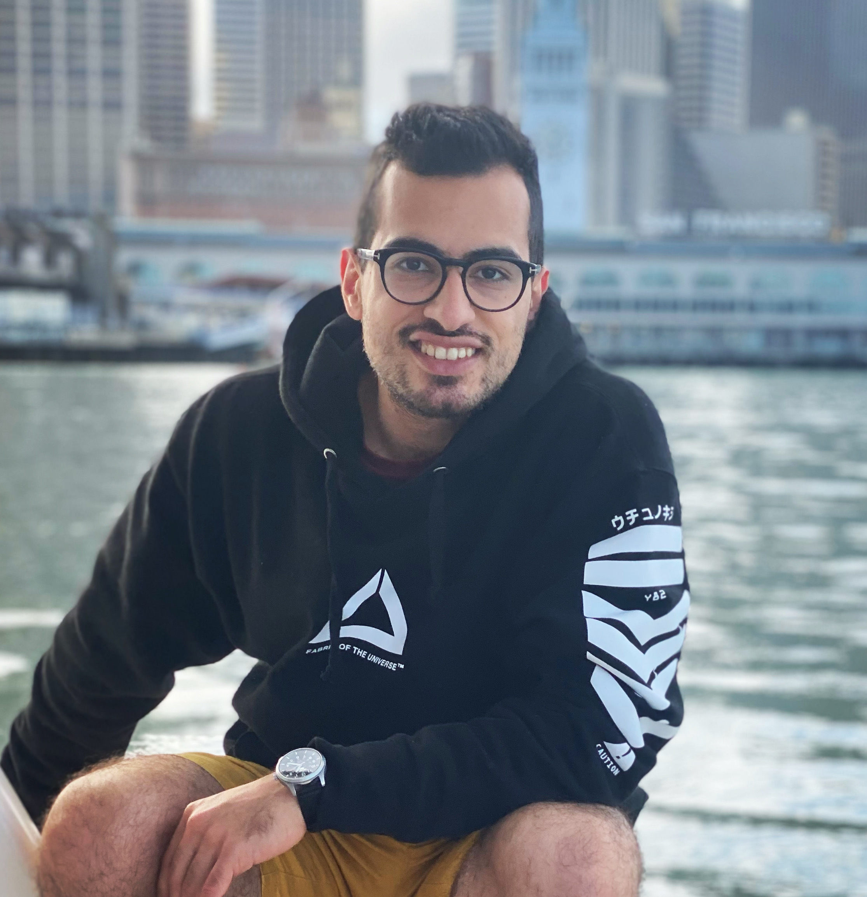
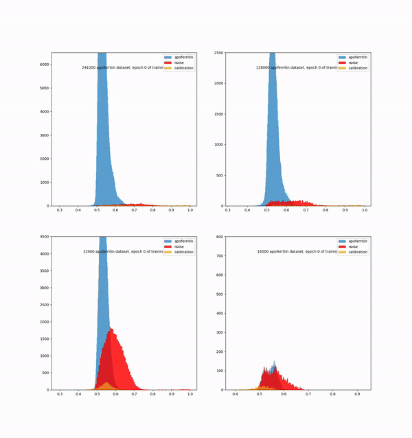

Robotics · Electronics · Machine learning
Armin Foroughi
Co-founder of Kinesis Labs. I build robots that do lab work, from the electronics up: computer vision and robot learning, trained on GPU clusters, with a biochemistry background and real wet-lab time, so the constraints need no translation.
Hackathons
Sky Guardian2nd place
Drone software on Gemini Live that processes aerial footage in real time for search and rescue: it finds people in distress, locates them from surrounding landmarks, and keeps working where satellite signal drops out. Built with Nicolas Dos Santos, Alex Battikha and Hari Natarajan.
RAX on the Booster K1Winner
A mapping agent that gives robots an understanding of their surroundings by combining voice with vision: talk to the K1 and it walks, explores, recognises and remembers faces, follows people and choreographs its own dances. Gemini Live for voice, YOLOv8, face recognition and stereo depth for real-time mapping, with Christopher Redfearn bringing it to the Unitree G1.
Survival of the FeatureWinner
Agentic A/B testing: agents find the high-impact pages, ship changes, track how users behave and keep optimising on live data. A growth team running in the background, around the clock.
Robo CopWinner
An Omi necklace that transcribes what police officers and first responders say, paired with a voice-controlled patrol robot that processes its camera in real time, to cut report writing and burnout. From four wheels and a frame to a connected robot in a single day, with Christopher Redfearn, Nik Shevchenko and Victor S. The win came with a guaranteed interview for Afore's pre-seed round.
BiosimWinner
An agentic backend that researches a wet-lab workflow, runs it, and learns from the experience.
Research
Particle heterogeneity in cryo-EM
A machine-learning model that quantifies heterogeneity among cryo-EM particles, to pick better particles and sharpen protein structure resolution. It built new features from how each particle behaves across reconstruction iterations, and a grid search that trained thousands of model variants in parallel across a Slurm GPU cluster.


Drug safety and imaging
Searched the FDA Adverse Event Reporting System for unreported side effects of drug combinations, and contoured lesions across PET, MRI and CT scans to build an atlas of PSMA uptake after prostatectomy.